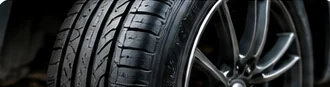
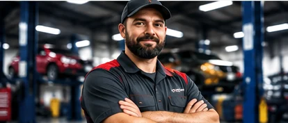

01 / MAINTENANCE
Oil & routine care
Oil changes, fluid checks, filters, and everyday maintenance services.
THE LOCAL AUTO SHOP TEMPLATE
From routine maintenance to repair conversations, make it easy for drivers to understand your services and reach your shop.
WHAT WE CAN HELP WITH
Make your most-requested automotive services easy to discover. Replace these examples with the work your shop actually provides.
Oil changes, fluid checks, filters, and everyday maintenance services.
Inspection and service options for the parts that help you stop.

Tire checks, replacement, and wheel-related services.
Help identifying warning lights, engine issues, and electrical problems.

A SPACE TO SHOW YOUR TEAM & SHOPA LITTLE ABOUT THE SHOP
Use this section to introduce your team, explain how you work, and help new customers understand what to expect. Personalize it with your own story and actual business details.
Find our detailsSIMPLE, CLEAR STEPS
This is an example process. Change these steps to match how your shop actually accepts and handles service requests.
Give customers a clear way to describe the issue or service they need.
Explain your inspection and approval process using your real shop policies.
Help drivers understand how to schedule and what to bring with them.
READY WHEN YOU ARE
Customers should be able to find your opening hours, location, and preferred contact method without digging around.
DEMO DETAILS — REPLACE BEFORE LAUNCHThis starter does not include online booking or a working contact form. Add your real contact links before publishing.